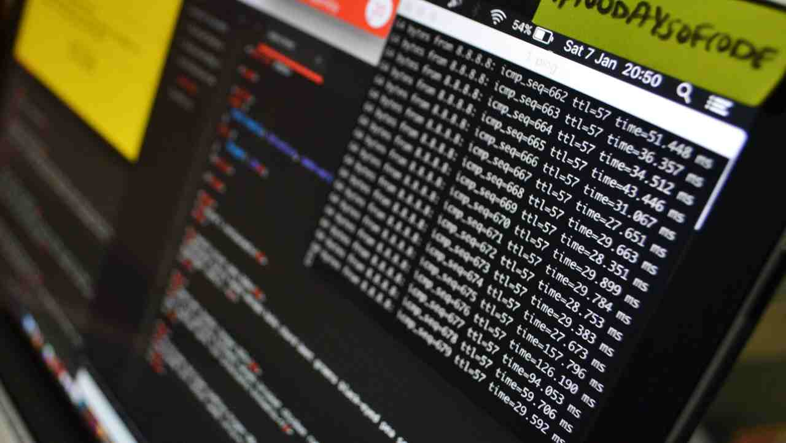

Pentesting

The skill in pentesting, or penetration testing, refers to the practice of analyzing a computer system, network, or web application to discover vulnerabilities that could be exploited
by an attacker. Here's a general description of this skill:
- Vulnerability Assessment: This includes the ability to use tools and techniques to discover and evaluate vulnerabilities in systems, networks, and applications.
- Vulnerability Exploitation: Once vulnerabilities are discovered, a pentester needs to be able to exploit these vulnerabilities in a controlled manner to demonstrate their potential impact.
- Knowledge of Pentest Tools: There are many tools available to assist with pentesting, and knowledge of these tools, such as Metasploit,
Burp Suite, Wireshark, Nmap, etc., is essential.
- Understanding of Networks and Systems: A good pentester needs to understand how networks, operating systems, and applications work,
and how they can be vulnerable to attacks.
- Reporting and Communication: After conducting a pentest, it's important to be able to communicate the findings in a clear and understandable manner,
often in the form of a report, detailing the discovered vulnerabilities, their severity, and recommendations for mitigating them.
- Ethics: Pentesting often involves testing the boundaries of what is allowed and what is not. Therefore, it's crucial to have a strong ethical code, seek necessary permissions, and abide by the law.
In summary, the skill in pentesting combines vulnerability assessment and exploitation, knowledge of pentest tools, understanding of networks and systems,
ability to effectively communicate findings, and a strong ethical sense.